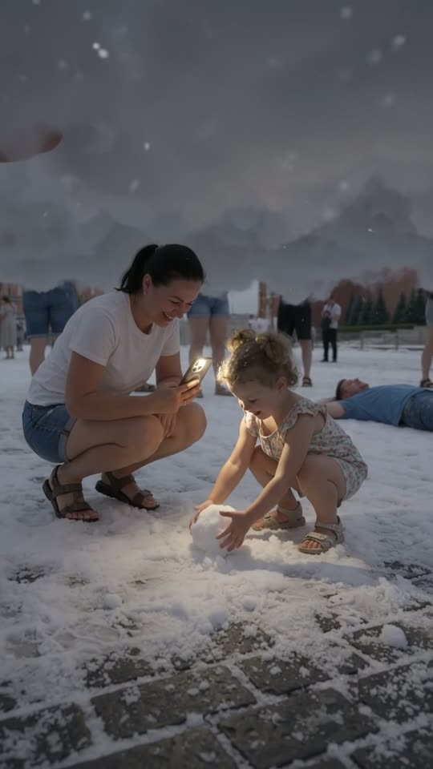
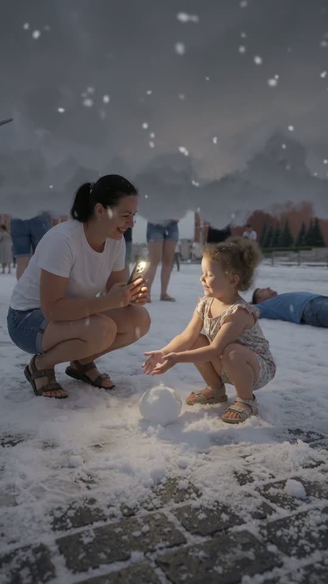

Free prompt pack
Summer on top.Winter underneath.
Nobody filled a square with a cloud and found it snowing underneath. Two still images and one prompt that dives between them, second by second.
Every prompt, in the order I ran them. Drag each one down through the cloud. Tap above it, tap below it.
Above the cloud
The cloud is a flood, not a few puffs. This image is frame one: a whole square sunk to the waist in one dense bank of cloud, and a man holding a ball of it like a snowball.
Watch out
Say the ground is hidden under it. If you only say cloud, you get loose puffs floating at head height and people standing on bare stone.
The prompt 146 words
Real handheld photo taken at chest height in Red Square, Moscow, on a sunny summer afternoon. A dense bank of soft grey-white cloud lies on the whole square like a flood, from the ground up to people's waists; the cobblestones are completely hidden under it and its surface rolls in soft billows lit by the sun. Dozens of tourists in summer clothes stand sunk to the waist in it, laughing and filming with their phones. In front at frame-right, a man with short hair, sunglasses, a white t-shirt and a dark backpack holds a round ball of packed cloud in both hands like a snowball, thin wisps curling off it. At the frame-left edge, a woman with long dark hair and sunglasses laughs. Behind them, the red-brick Spasskaya clock tower and the colourful domes of Saint Basil's Cathedral under a blue sky. Real photo, natural colour.
Under the cloud
The second picture is where the dive lands. Only legs, snow and a dark ceiling of cloud. This image goes in as the second reference: when the camera is inside the cloud, the video cuts to it.
Watch out
Keep children out of this image. Flow won't take an upload with a child in it, so the mother and her little girl come in through the video prompt.

The prompt 124 words
Real handheld photo taken at knee height underneath a cloud lying on a city square. The cloud is a dark grey, uneven ceiling that fills the whole top half of the photo, hanging at the height of people's waists, and snowflakes fall out of it. Under it, the cobblestones are covered in thick fresh snow and the light is dim and cold. Dozens of bare legs in denim shorts and sandals stand in the snow, their upper bodies hidden inside the cloud; in the foreground at frame-left, a pair of legs in brown sandals. Far back at frame-right, a man in a blue t-shirt lies on his back in the snow. In the middle, an open patch of untouched snow. Real photo, natural colour.
The dive
Ten seconds, written second by second. Add the first image, then the second one, set 10 s, 9:16, 720p and audio on, and paste the prompt whole.
- 0–1.8 sa ball of cloud in his hands
- 1.8–3.8 she holds it out to you
- 3.8–4.4 sthe camera goes down into the cloud
- 4.4–4.8 sall grey, the only cut
- 4.8–5.4 sout the bottom, into the snow
- 5.4–10 sa girl and her first snowball
Watch out
The grey moment is the cut. Give the model the second image and tell it the change happens only inside the cloud, or it cuts to a place of its own.
Fragments


The prompt 1343 words
FORMAT Real handheld video, seen as the finished exported video file: the full picture edge to edge, nothing on top of it. Whatever records the picture is never in frame. One continuous handheld move in real time. Vertical frame. The video runs at 24 fps. No frame is repeated. Real time, 1x speed, never slow motion. SCENE Red Square on a sunny summer afternoon is filled waist-deep with a dense cloud lying on the ground, and tourists in summer clothes stand in it, laughing and filming. A man holds a ball of packed cloud in his hands like a snowball and holds it out toward the camera. Then the camera is lowered straight down into the cloud, the picture goes grey for half a second inside it, and it comes out underneath: below the cloud it is a dim, snowy winter, the cloud hangs overhead like a low dark ceiling, snow falls from it, and only people's bare legs and sandals show. In the middle, a mother crouches and lights up her little daughter with her phone's flashlight while the girl presses the snow into a ball. The take ends on the girl looking up at her mother and smiling. REFERENCE IMAGES Image 1 is the first frame: the square above the cloud. Use it for the square, the clock tower, the red wall, the cathedral, the sky, the cloud's surface, the tourists, the laughing woman and the man with the ball, from 0 to 4.0 s. Image 2 is the view underneath the cloud. Use it ONLY from 5.0 s to the last frame, for the place: the low cloud ceiling, the falling snow, the snowy cobblestones, the crowd's bare legs and the man lying in the snow. From 5.0 s the place matches image 2 exactly, zero drift, no smoothing. The mother and the girl are not in image 2: they are crouching in the open snow in the middle of the frame, described below. The passage from image 1 to image 2 happens only inside the cloud, at 4.0–5.0 s. THE CLOUD A dense bank of soft grey-white cloud lying on the square, opaque from people's waists down to the ground, its surface rolling slowly in soft billows that catch the afternoon sun. It is thick enough that nothing below the waist shows through it. It is never a thin see-through haze, never smoke, never steam. From underneath, the same cloud is a dark grey, uneven ceiling at the height of people's waists, a little above the crouching mother's head, with snowflakes falling out of it. THE PEOPLE Above: dozens of tourists in summer clothes, sunk to the waist in the cloud, some filming with their phones, one in a dark cap. At the frame-left edge, a woman with long dark hair and sunglasses, laughing. At frame-right, the man: short hair, sunglasses, white t-shirt with a small print, dark backpack, holding a round white ball of packed cloud in both hands. Below: the bare legs of the crowd in denim shorts and sandals, standing in the snow, their upper bodies hidden in the cloud; in the foreground at frame-left, a pair of legs in denim shorts and brown sandals; far back at frame-right, a man in a blue t-shirt lying on his back in the snow. Two metres in front of the camera, in the open snow in the middle of the frame, between the legs: the mother and the girl. The mother: dark hair tied back, white t-shirt, denim shorts, crouching, holding her phone with its flashlight on. The girl: light curly hair in two little tufts, a light floral romper and sandals, squatting in the snow in the flashlight's warm light. FIRST FRAME Already moving: the cloud surface from y 31% down to the bottom edge; the man at frame-right, x 55-95%, his head at y 37%, the ball held in both hands at x 58%, y 47%; the laughing woman at the frame-left edge, x 0-14%, y 38-55%; tourists half sunk in the cloud behind them at y 30-40%; the cathedral's colourful domes at x 8-31%, y 13-30%; the clock tower at x 63-78%, y 1-30%, the red wall running to the right edge; blue sky with white clouds. Instant read: a whole square is drowning in a cloud. No delayed reveal. CAMERA Handheld at chest height, natural sway. 0–3.8 s: it stays on the man and the square with a small drift. 3.8–5.0 s: it is lowered straight down, one metre, into the cloud and out of its underside. 5.0–10 s: low, at knee height under the cloud; it eases half a metre to the right, past the foreground legs, and settles on the mother and the girl in the middle of the frame, then stays almost still. It never flies up, never orbits, never zooms, never cuts to any other place. ACTION TIMING 0–1.8 s — The man turns the ball of cloud in his hands, wisps trailing off it; the woman at frame-left laughs; behind them tourists film; the cloud rolls slowly in the sun. 1.8–3.8 s — He lifts the ball and holds it out toward the camera, showing it off, smiling; wisps curl off it into the air. 3.8–4.4 s — The camera is lowered straight down: the cloud surface rises up the frame and swallows it. 4.4–4.8 s — Inside the cloud: soft grey, darkening as the camera goes down. This is the only moment the frame is all cloud. 4.8–5.4 s — The camera comes out of the underside: the grey thins from the bottom up and the snowy cobblestones, the legs and the glow of the flashlight appear under the dark cloud ceiling, exactly as image 2. 5.4–8.5 s — The camera eases past the foreground legs and finds the mother and the girl crouching in the open snow. In the flashlight's warm circle, the girl scoops snow with both hands and presses it into a round snowball on the ground; the mother holds the light steady and laughs; snowflakes fall through the beam and land in the girl's hair; the legs in the background shift their weight. 8.5–10 s — The girl looks up at her mother and smiles; the mother smiles back. Hold to the last frame. PHYSICS AND SCALE Above, the cloud is soft and light: bodies pass through it and leave slow swirls; the ball sheds thin wisps. Below, everything is winter: the snow is real, thick and crunchy on the cobblestones, flakes fall slowly from the cloud ceiling and settle on hair and shoulders. The cloud ceiling stays at the same height the whole time. Nothing morphs. LIGHTING Above: bright summer sun from frame-left, blue sky, the cloud's surface lit soft white and lilac-grey. Below: dim, cold grey light filtering through the cloud, and one warm beam from the phone's flashlight lighting the girl, her hands and the snow. AUDIO No music, no score, no narration, no subtitles. Above: an open summer square, crowd chatter and laughter, light wind. Into the cloud: the sound goes muffled and close. Below: quiet and padded like snow at night, the crunch of snow, the girl's soft giggle, the mother's gentle laugh. No clear words. LOOK Real handheld footage, seen as the finished exported file: crisp detail, natural colour, a little noise in the dark part, no colour grade, no teal-and-orange, no film grain, no lens flare, no slow motion. No camera app interface: no shutter button, no gallery thumbnail, no record button, no icons, no timer, no recording dot, no frame lines. POSITIVE LOCKS One place: the same square above and below the cloud; the change happens only inside the cloud at 4.0–5.0 s and never anywhere else. The man, the mother and the girl are the same people in every frame they appear in. No captions, no subtitles, no on-screen text, no watermark, no logos, no letters or signs anywhere, no camera interface, nothing on top of the picture. ONE SQUARE. ONE CLOUD. ONE DIVE. SUMMER ABOVE, WINTER BELOW. NO MUSIC. NO INTERFACE. NO SLOW MOTION.
Rule 01
Two pictures, one cut
A cut that looks impossible is two references and a grey frame between them. Put the grey where you want the jump.
Rule 02
Hide the ground
A cloud on the floor has to swallow the floor. Say the stones are gone and everyone is in it to the waist.
Rule 03
Kids in the text
Flow blocks uploads with children. Leave them out of the image and write them into the prompt.
That's the whole build
Now go findyour own winter.
If yours works, send it over. I read every DM and the good ones end up on the account.
@martiiifons